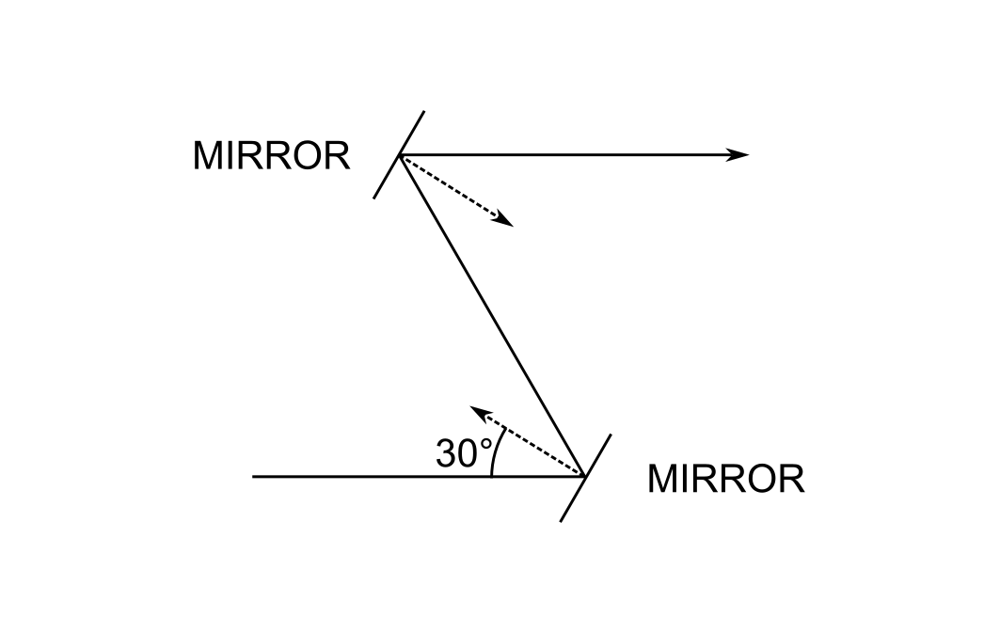
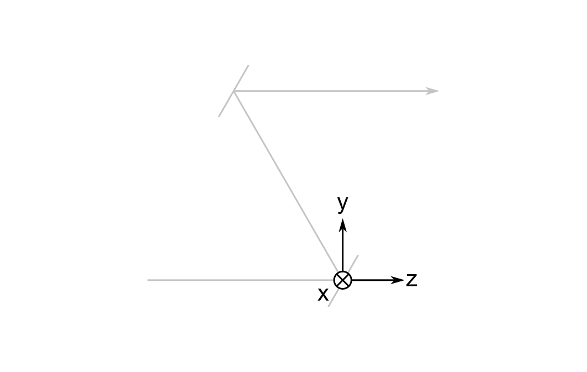
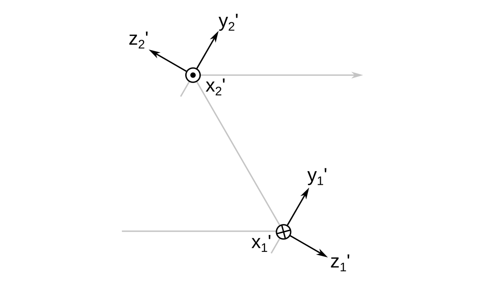
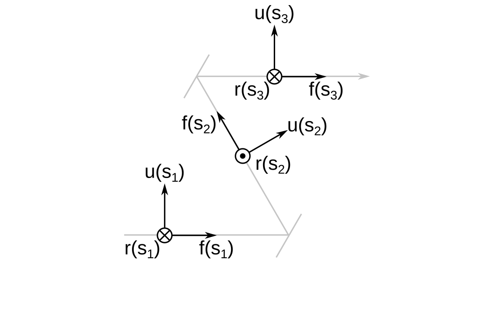
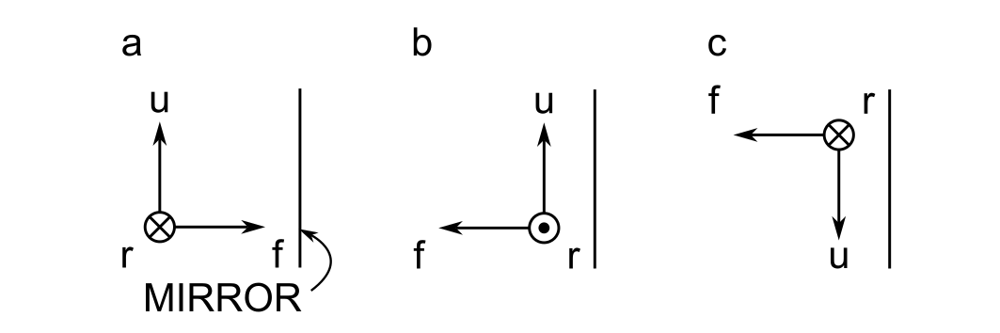
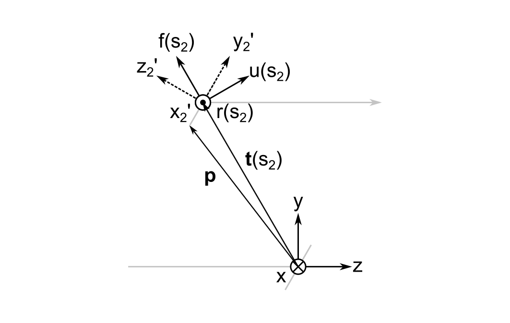
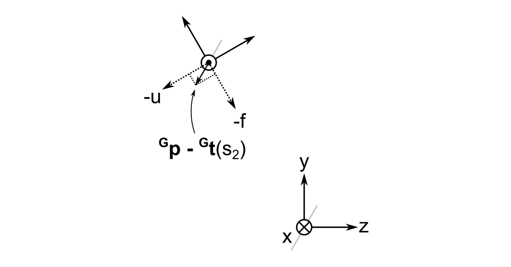
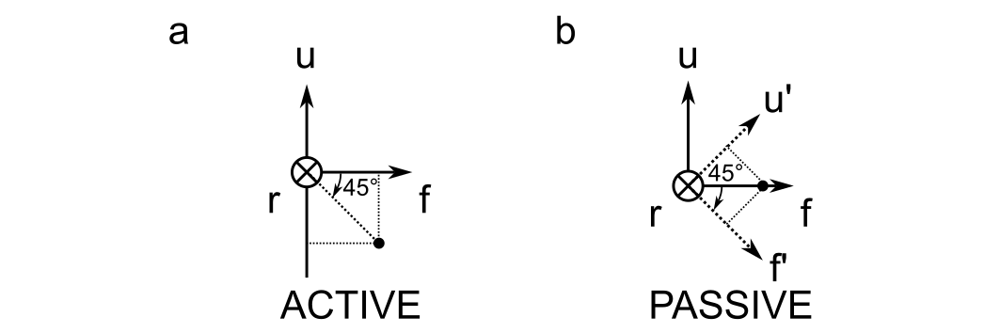

I am working on a new feature in my ray tracer that will allow users to lay out sequential optical systems in 3D. This is forcing me to think carefully about 3D rigid body transformations in a level of detail that I have never before considered.
In this post I walk through the mathematics for modeling a pair of flat mirrors that are oriented at different angles. Strictly speaking, the layout can be represented more easily in 2D, but I will treat the problem as if it were the more general 3D case. Emphasis will be placed on specifying rotations in an intuitive manner, which will mean rotations about the optical axis, rather than about a fixed axis in a global reference frame.
The Problem
The problem that I will consider is depicted as follows:

The system consists of two flat mirrors whose optical axis forms a "figure Z." The normal of the first mirror is at 30 degrees to the axis, and likewise for the second. The optical axis emerges from the second mirror parallel to the first.
The questions are:
- How do I construct the system without requiring the user to specify the absolute coordinates of the mirror surfaces?
- How do I represent the local coordinate reference frames for each mirror surface?
- How do I handle transformations between frames?
Ray Tracing Review
As a quick review, the ray tracing algorithm that I implemented was described by Spencer and Murty. It is loosely follows this pseudo-code:
for each surface in system:
for each ray in ray bundle:
1. transform the ray coordinates by rotating the reference frame into the local surface frame
2. find the ray/surface intersection point
3. propagate the ray to the intersection point
4. perform bounds checking against the surface
5. redirect the ray according to the laws of refraction or reflection
6. transform the ray coordinates by rotating the reference frame back into the global frame
Rotations are performed using 3x3 rotation matrices. Ray/surface intersections are found numerically using the Newton-Raphson method, even for spherical surfaces. I computed the expressions for the surface sag and normal vectors for conics and flat surfaces by hand and hard-coded them as functions of the intersection point in the local surface reference frame to avoid having to compute them on-the-fly.
Looking at the ray trace algorithm, I see three things that are relevant to this discussion:
- There are both global and local reference frames
- Surfaces are iterated over sequentially
- There are rotations, one at the beginning of each loop iteration and one at the end
Let's explore each one individually, starting with the global and local reference frames.
Reference Frames
I will use only right-handed reference frames where positive rotations are in the counterclockwise direction.
The Global Reference Frame
The global reference frame \( \mathbf{G} \) remains fixed. Sometimes it's called the world frame. I denote the coordinate axes of the global frame using \( x \), \( y \), and \( z \).

By convention, I put its origin at the first non-object surface; this would be at the first mirror in the system of two mirrors I described above. I also establish the convention that the optical axis between the object and the first surface is parallel to the global z-axis.
The global frame is important because the orthonormal vectors defining the local and cursor frames (to be explained later) are expressed relative to it.
Local Reference Frames
Each surface \( i \) has a local reference frame \( \mathbf{L}_i \) whose origin lies at the vertex of the surface. Its coordinate axes are denoted \( x_i^{\prime} \), \( y_i^{\prime} \), and \( z_i^{\prime} \). For flat surfaces, I set the \( z_i^{\prime} \) axis perpendicular to the surface.

Notice that the \( x^{\prime} \) axes flip directions when going from mirror 1 to mirror 2. This is done to preserve the right-handedness of the reference frames. More about this will be explained in the next section.
Sequential System Models
Ray tracing programs for optical design are often divided into two categories: sequential and nonsequential. In sequential ray tracers, rays are traced from one surface to another in the sequence for which they are defined. This means that a ray could pass right through a surface if it is not the next surface in the model sequence.
Nonsequential ray tracers do not take account of the order in which surfaces are defined. Rays are fired into the world and the intersect whatever the closest object is on their path. Illumination optics often use nonsequential ray tracing, as do rendering engines for cinema.
My ray tracer is a sequential ray tracer because sequential ray tracing is easier to implement and can be applied to nearly all the use cases that I encounter in the lab.
3D Layouts of Sequential Surfaces
One possibility to layout sequential surfaces in 3D is to specify the coordinates and orientations of each surface relative to the global frame. This is how one adds surfaces in 3D in the open source Python library Optiland, for example. In practice, I found that I need to have a piece of paper by my side to work out the positions of each surface independently. This option provides maximum flexibility in surface placement.
The other possibility that I considered is to leverage the fact that the surfaces are an ordered sequence, and position them in 3D space along the optical axis. The axis can reflect from reflecting surfaces using the law of reflection. Furthermore, any tilt or decenter could be specified relative to this axis. I ultimately chose this solution because I felt that it better matches my mental model of sequential optical systems. It also seems to follow more closely what I do in the lab when I build a system, i.e. add components along an axis that bends through 3D space.
The Cursor
I created the idea of the cursor to position sequential surfaces in 3D space. A cursor has a 3D position, \( \vec{ t } \left( s \right) \) that is parameterized over the track length \( s \). \( s \) is negative for the object surface, \( s = 0 \) at the first non-object surface, and achieves its greatest value at the final image plane.
In addition, the cursor has a reference frame attached to it that I denote \( \mathbf{C} \left( s \right) \). The axes of the cursor frame are \( r \), \( u \) and \( f \), which stand for right, up, and forward, respectively. This nearly matches the FRU coordinate system in game engines such as Unreal, except I take the forward direction to represent the optical axis because I would say that this convention is universal in optical design.

Above I show the cursor frame at three different positions along the optical axis \( s_1 < 0 < s_2 < s_3 \). Refracting surfaces will not change the orientation of the cursor frame, but reflecting surfaces will.
Finally, when \( s \) is exactly equal to a reflecting surface position, I take the orientation of the cursor frame to be the one before reflection. An infinitesimal distance later, the frame reorients by reflecting about the surface normal at the vertex of the surface in its local frame.
Convention for Maintaining Right Handedness upon Reflection
There is an ambiguity that arises in the cursor frame upon reflection that is best illustrated in the example below:

In panel a, the cursor is incident upon a mirror with its frame's forward direction antiparallel to the mirror's normal vector. There are two equally valid choices when defining the cursor frame after reflection. In panel b, the cursor frame is rotated about the up direction, whereas in panel c it is rotated about the right direction. This means that there is no fundamentally correct way to position the cursor frame after reflection. We must choose a convention and stick with it.
Reflections of the cursor frame are handled in two steps:
- Reflect the frame
- Adjust the results to maintain right handedness and address the ambiguity illustrated above
The vector law of reflection is used to compute the new \( \hat{ r } \), \( \hat{ u } \), and \( \hat{ f } \) unit vectors for any general angle of incidence of the cursor frame upon a reflecting surface:
$$\begin{equation}
\hat{ f }^{\prime} = \hat{ f } - 2 \left( \hat{ f } \cdot \hat{ n } \right) \hat{ n }
\end{equation}$$
where \( \hat{ n } \) is the surface's unit normal vector. The same applies for the right and up unit vectors.
After reflection, I perform a check for right handedness. By convention, I maintain the direction of the up unit vector because many optical systems are laid out in 2D and their elements are rotated about this direction. This convention means that the right unit vector must be flipped:
if cross(right, up) · forward < 0:
right = -right
The cross product between the right and up directions must point in the forward direction if the system is right handed. "Pointing in the forward direction" means that the dot product of the result with the forward unit vector must be greater than zero. The conditonal in the pseudocode above checks whether this is not indeed the case and flips the right unit vector if necessary.
Transformations between Reference Frames
There are two different transformations required by the ray trace algorithm:
- From the global frame to a surface local frame
- From a surface local frame to the global frame
Because the system is laid out relative to the cursor frame, I need to chain together two rotations, one from the global to the cursor frame, and one from the cursor to the local frame.
Example
Let's say that the second mirror has a diameter of 25.4 mm, and that the mirrors are separated by \( \| \vec{ t } \left( s_2 \right) \| = 100 \, mm \). I want to find the transformation from the global frame coordinates at a point on the bottom edge of the mirror to the local frame coordinates, which is \( y_2^{\prime} = -12.7 \, mm \). The image below illustrates the geometry that will be used for this example.

From relatively straightforward trigonmetry we get the global frame coordinates of both \( {}^{\mathbf{G}}\vec{ t } \left( s_2 \right) \) and the point we are trying to find, \( {}^{\mathbf{G}}\vec{ p } \). (Vectors preceded by superscripts with reference frame names indicate the coordinate system they are being referred to.)
$$\begin{eqnarray}
{}^{\mathbf{G}}\vec{ t } \left( s_2 \right) = \left(
\begin{array}{c}
0 \\
50 \sqrt{ 3 } \\
-50
\end{array}
\right)
\end{eqnarray}$$
$$\begin{eqnarray}
{}^{\mathbf{G}}\vec{ p } = \left(
\begin{array}{c}
0 \\
43.65 \sqrt{ 3 } \\
-56.35
\end{array}
\right)
\end{eqnarray}$$
Step 1: Translate from the Global Origin to the Cursor Frame
The first step in computing \( {}^{\mathbf{ C }} \vec{ p } \) is to translate from the origin of the global frame to the position of cursor.
$$ {}^{\mathbf{G}}\vec{ p } - {}^{\mathbf{G}}\vec{ t } \left( s_2 \right) = (0, -6.35 \sqrt{3}, -6.35)^{ \mathrm{ T }}$$
Step 2: Rotate into the Cursor Frame
A rotation from the global frame into the cursor frame can be achieved by taking the \( \hat{ r } \), \( \hat{ u } \), and \( \hat{ f } \) unit vectors that define the cursor frame in the global coordinate system and making them the columns of a \( 3 \times 3 \) rotation matrix. At the second mirror, this matrix is:
$$\begin{eqnarray}
R_{GC} \left( \theta = 30^{ \circ } \right) = \left(
\begin{array}{ccc}
-1 & 0 & 0 \\
0 & 1 / 2 & \sqrt{ 3 } / 2 \\
0 & \sqrt{ 3 } / 2 & -1 / 2
\end{array}
\right)
\end{eqnarray}$$
If this is not clear, consider that the columns of a rotation matrix represent the basis vectors of the coordinate system after rotation, but expressed in the original (global) frame's coordinate system. Also, from the diagram above, \( \hat{ u } \left( s_2 \right) = ( 0, 1 / 2, \sqrt{ 3 } / 2)^{ \mathrm{ T }} \) and \( \hat{ f } \left( s_2 \right) = ( 0, \sqrt{ 3 } / 2, - 1 / 2)^{ \mathrm{ T }}\), which are the second and third columns of the matrix.
The rotation into the cursor frame is the product between the rotation matrix and the difference \( {}^{\mathbf{G}}\vec{ p } - {}^{\mathbf{G}}\vec{ t } \left( s_2 \right) \):
$$\begin{eqnarray}
{}^{\mathbf{ C }} \vec{ p } = R_{GC} \left[ {}^{\mathbf{G}}\vec{ p } - {}^{\mathbf{G}}\vec{ t } \left( s_2 \right) \right] = \left(
\begin{array}{ccc}
-1 & 0 & 0 \\
0 & 1 / 2 & \sqrt{ 3 } / 2 \\
0 & \sqrt{ 3 } / 2 & -1 / 2
\end{array}
\right) \left(
\begin{array}{c}
0 \\
-6.35 \sqrt{ 3 } \\
-6.35
\end{array}
\right) = \left(
\begin{array}{c}
0 \\
-6.35 \sqrt{ 3 } \\
-6.35
\end{array}
\right)
\end{eqnarray}$$
At first, I thought I had made a mistake when I did this calculation because the vector is unchanged after rotation. However, as illustrated below, you can see that the relative lengths of the projections of \( {}^{\mathbf{G}}\vec{ p } - {}^{\mathbf{G}}\vec{ t } \left( s_2 \right) \) onto the \( u \) and \( f \) axes make sense.

As it turns out, I inadvertently chose an eigenvector of the rotation matrix as an example; any general point will in fact change its coordinates when moving from the global to the cursor frame. For example, if we try to rotate a vector that is antiparallel to the global z-axis, i.e. \( {}^{\mathbf{G}}\vec{ p } - {}^{\mathbf{G}}\vec{ t } \left( s_2 \right) = ( 0, 0, -1 )^{ \mathrm{ T } }\), then it will become
$$\begin{eqnarray}
R_{GC} \left[ {}^{\mathbf{G}}\vec{ p } - {}^{\mathbf{G}}\vec{ t } \left( s_2 \right) \right] = \left(
\begin{array}{ccc}
-1 & 0 & 0 \\
0 & 1 / 2 & \sqrt{ 3 } / 2 \\
0 & \sqrt{ 3 } / 2 & -1 / 2
\end{array}
\right) \left(
\begin{array}{c}
0 \\
0 \\
-1
\end{array}
\right) = \left(
\begin{array}{c}
0 \\
-0.8660 \\
-0.5
\end{array}
\right)
\end{eqnarray}$$
in the cursor frame.
Step 3: Rotate into the Surface Local Frame
For the final step, I need to compose a rotation matrix from a sequence of three rotations. To do this well, I need to be very clear about what types of rotations I am performing and their sequence.
Active vs. Passive Rotations
The difference between active and passive rotations are illustrated below for a 45 degree rotation about the right axis.

Active rotations specify the rotation of a point relative to a fixed reference frame; passive rotations specify the rotation of a reference frame, keeping the point fixed. And pay attention here: the right axis points into the screen, so a positive rotation would be clockwise when viewed from the perspective drawn above.
What are the corresponding rotation matrices? Here, I found that the internet is absolutely littered with wrong answers, including on sites like Wikipedia. I even get different answers from LLMs depending on when I ask. Therefore, I am including them here as a gift to my future self.
The active rotation matrices about the x (right), y (up), and z (forward) axes are:
$$\begin{eqnarray}
R_x \left( \theta \right) = \left(
\begin{array}{ccc}
1 & 0 & 0 \\
0 & \cos \theta & - \sin \theta \\
0 & \sin \theta & \cos \theta
\end{array}
\right)
\end{eqnarray}$$
$$\begin{eqnarray}
R_y \left( \psi \right) = \left(
\begin{array}{ccc}
\cos \psi & 0 & \sin \psi \\
0 & 1 & 0 \\
- \sin \psi & 0 & \cos \psi
\end{array}
\right)
\end{eqnarray}$$
$$\begin{eqnarray}
R_z \left( \phi \right) = \left(
\begin{array}{ccc}
\cos \phi & - \sin \phi & 0 \\
\sin \phi & \cos \phi & 0 \\
0 & 0 & 1
\end{array}
\right)
\end{eqnarray}$$
The passive rotation matrices about the x (right), y (up), and z (forward) axes are:
$$\begin{eqnarray}
R_x \left( \theta \right) = \left(
\begin{array}{ccc}
1 & 0 & 0 \\
0 & \cos \theta & \sin \theta \\
0 & - \sin \theta & \cos \theta
\end{array}
\right)
\end{eqnarray}$$
$$\begin{eqnarray}
R_y \left( \psi \right) = \left(
\begin{array}{ccc}
\cos \psi & 0 & - \sin \psi \\
0 & 1 & 0 \\
\sin \psi & 0 & \cos \psi
\end{array}
\right)
\end{eqnarray}$$
$$\begin{eqnarray}
R_z \left( \phi \right) = \left(
\begin{array}{ccc}
\cos \phi & \sin \phi & 0 \\
- \sin \phi & \cos \phi & 0 \\
0 & 0 & 1
\end{array}
\right)
\end{eqnarray}$$
Notice that all that changes between these two types of rotations is the location of a negative sign on the \( \sin \) terms.
I found that a useful way to remember whether a matrix represents an active or passive rotation is as follows. Take for example the +45 degree rotation of the vector \( ( 0, 0, 1 )^{ \mathrm{ T } } \) about the right direction illustrated above. You can see that an active rotation should result in a negative \( u \) and a positive \( f \) component. This means:
$$\begin{eqnarray}
\left(
\begin{array}{ccc}
1 & 0 & 0 \\
0 & 1 / \sqrt{ 2 } & - 1 / \sqrt{ 2 } \\
0 & 1 / \sqrt{ 2 } & 1 / \sqrt{ 2 }
\end{array}
\right) \left(
\begin{array}{c}
0 \\
0 \\
1
\end{array}
\right) = \left(
\begin{array}{c}
0 \\
- 1 / \sqrt{ 2 } \\
1 / \sqrt{ 2 }
\end{array}
\right)
\end{eqnarray}$$
The passive rotation should result in positive values for both the \( u^{ \prime } \) and \( f^{ \prime } \) components:
$$\begin{eqnarray}
\left(
\begin{array}{ccc}
1 & 0 & 0 \\
0 & 1 / \sqrt{ 2 } & 1 / \sqrt{ 2 } \\
0 & - 1 / \sqrt{ 2 } & 1 / \sqrt{ 2 }
\end{array}
\right) \left(
\begin{array}{c}
0 \\
0 \\
1
\end{array}
\right) = \left(
\begin{array}{c}
0 \\
1 / \sqrt{ 2 } \\
1 / \sqrt{ 2 }
\end{array}
\right)
\end{eqnarray}$$
I can do a similar check for the other directions to verify the other matrices.
Extrinsic vs. Intrinsic Rotations
I found these easier to understand than active and passive rotations. Extrinsic rotations are rotations that are always about a fixed global reference frame. On the other hand, intrinsic rotations are about the intermediate frames that result from a single rotation. So if I rotate about the \( f \) axis, then the \( r \) and \( u \) axes will be rotated, resulting in an intermediate \( r^{ \prime }u^{ \prime }f^{ \prime } \) frame. The next rotation will be about one of these intermediate axes.
The confusing thing about these two types of rotations is the order in which the rotation matrices are applied to a vector. An extrinsic rotation of a vector \( \vec{ v } \) about \( r \), then \( u \), then \( f \) is written as:
$$ R_f R_u R_r \vec{ v} $$
which follows the usual commutativity rules of matrix multiplication. An intrinsic rotation of a vector \( \vec{ v } \) about \( r \), then \( u^{ \prime } \), then \( f^{ \prime \prime } \), on the other hand is written as:
$$ R_r R_u R_f \vec{ v} $$
So even though the rotation about the right direction is performed first, we multiply the vector first by the rotation matrix about the \( f \) direction in the second intermediate frame.
All of this might seem confusing and lead one to wonder why they would want to use intrinsic rotations, but actually they are much more intuitive than extrinsic rotations and make a lot of sense when laying out an optical system. For example, if I have a two-axis mirror mount and I rotate the mirror about the vertical axis, a horizontal rotation that follows will be about the axis in the newly rotated frame, not the global laboratory frame. In any case, a sequence of three extrinsic rotations and three intrinsic rotations through the same angles will produce the same result so long as the order of the rotation matrices is correct.
Euler Angles and Rotation Sequences
The most important thing I learned about Euler angles is that they are completely meaningless unless you also specify a rotation sequence. Additionally, the internet is full of resources about the distinction between proper and improper Euler angles. The gist of what I learned here is that proper Euler angles are really a distraction to scientists and engineers because they rely on rotation sequences in which one of the axes is used twice. More useful are what aerospace engineers sometimes refer to as the Tait-Bryan angles, which are the rotation angles associated with sequences like \( z-y^{ \prime }-x^{ \prime \prime } \) or \( x-y-z \).
Now, there is one point here that is worth making and that is relevant to optical system layout: rotations about \( f \), the forward direction, into the local frame are best performed last in the sequence. To understand why, consider a cylindrical lens with an axis parallel to the local \( z' \) direction. If we perform an intrinsic rotation about the cursor's \( f \) direction first and then try to adjust its tip or tilt, we will be doing so about axes that are rotated such that its tip and tilt become coupled with respect to the global frame. When aligning such systems, no one expects that rotation of a cylindrical lens about its axis will change the way that the tip and tilt adjustors on a lens mount work.
For all these reasons, I choose an intrinsic sequence \(r - u^{ \prime } - f^{{ \prime \prime} } \) of passive rotations with Euler angles \( \theta \), \( \psi \), and \( \phi \), respectively. The corresponding rotation matrix is:
$$\begin{eqnarray}
R_{ \mathbf{ CL } } ( \theta, \psi, \phi ) = R_r ( \theta ) R_u ( \psi ) R_f ( \phi ) = \left(
\begin{array}{ccc}
\cos \phi \cos \psi & \sin \phi \cos \psi & - \sin \psi \\
- \sin \phi \cos \theta + \sin \psi \sin \theta \cos \phi & \sin \phi \sin \psi \sin \theta + \cos \phi \cos \theta & \sin \theta \cos \psi \\
\sin \phi \sin \theta + \sin \psi \cos \phi \cos \theta & \sin \phi \sin \psi \cos \theta - \sin \theta \cos \phi & \cos \psi \cos \theta
\end{array}
\right)
\end{eqnarray}$$
And finally, the transformation of the point on the mirror from the global to the surface local frame is:
$$ {}^{ \mathbf{ L }}\vec{p} = R_{ CL }R_{ GC } \left[ {}^{\mathbf{G}}\vec{ p } - {}^{\mathbf{G}}\vec{ t } \left( s_2 \right) \right] $$
The Solution to the Example
Does this give the correct result in the above example? Well, the mirror is rotated +30 degrees about the right direction, so the cursor-to-local rotation matrix is:
$$\begin{eqnarray}
R_{CL} \left( \theta = 30^{ \circ }, \psi = 0, \phi = 0 \right) = \left(
\begin{array}{ccc}
1 & 0 & 0 \\
0 & \sqrt{ 3 } / 2 & 1 / 2 \\
0 & - 1 / 2 & \sqrt{ 3 } / 2
\end{array}
\right)
\end{eqnarray}$$
From earlier, the vector representing the point in the cursor frame is \( ( 0, -6.35 \sqrt{ 3 }, -6.35 )^{ \mathrm{ T } } \). Their product gives the final answer:
$$\begin{eqnarray}
{}^{ \mathbf{ L } }\vec{ p } = \left(
\begin{array}{ccc}
1 & 0 & 0 \\
0 & \sqrt{ 3 } / 2 & 1 / 2 \\
0 & - 1 / 2 & \sqrt{ 3 } / 2
\end{array}
\right) \left(
\begin{array}{c}
0 \\
-6.35 \sqrt{ 3 } \\
-6.35
\end{array}
\right) = \left(
\begin{array}{c}
0 \\
-12.7 \\
0
\end{array}
\right)
\end{eqnarray}$$
This is exactly as expected, as we wanted to get a point on the bottom of the 25.4 mm diameter mirror in its local frame.
Step 4: Rotate back from the Surface Local to the Global Frame
I need to go back to the global frame at the end of each iteration for a ray trace. Fortunately, it's easy to undo a rotation because the inverse of a rotation matrix is just its transpose. I also need to swap the order of the matrices when taking the inverse, and add back the offset from the origin of the global system. This means:
$${}^{\mathbf{ G } }\vec{ p } = R_{GC}^{ \mathrm{ T} } R_{CL}^{ \mathrm{ T} } {}^{\mathbf{ L } }\vec{ p } + {}^{\mathbf{ G }} \vec{ t } (s_2) $$
I plugged in the numbers in Python and verified that I get the original point back.
This should be all I need to know to implement 3D sequential optical system layouts in my ray tracer.